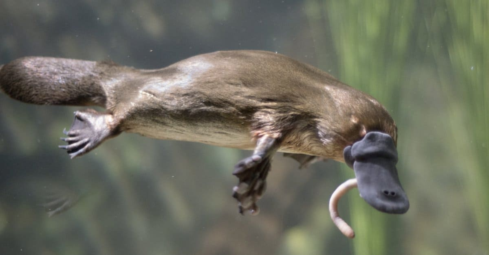

Amazing Animal
PlatypusWho isn't fascinated by the platypus, a mammal with a duck's bill that lays eggs and whose males have venomous spurs on their back legs? Not only this,but the platypus and its equally weird fellow monotreme, the echidna, can find prey by sensing electrical fields. They are the only mammals that can do this, not counting the Guiana dolphin. The platypus does this through receptors in its bill.
Platypus Photo
Its tiny eyes are more like those of a hagfish than a mammal and have double cones. The animal also glows blue-green while under black light. While the female has two ovaries, only the left one works. When her babies hatch out of their eggs, they aren't fed milk from teats, which the mother doesn't have, but from dermal pores. The babies are actually born with teeth but lose them. Grown platypuses use tough plates in their bills to grind up their food. People used to eat their tails, which are full of fat.